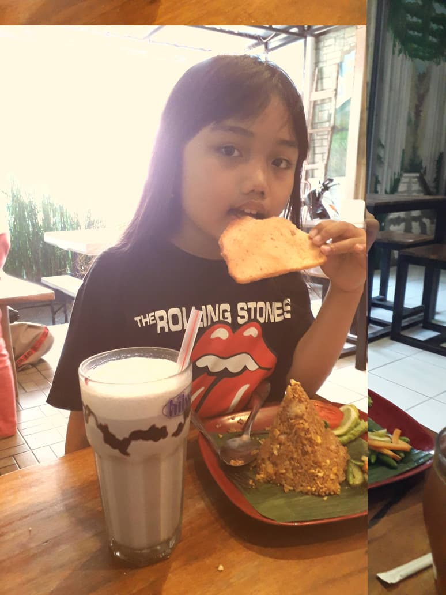
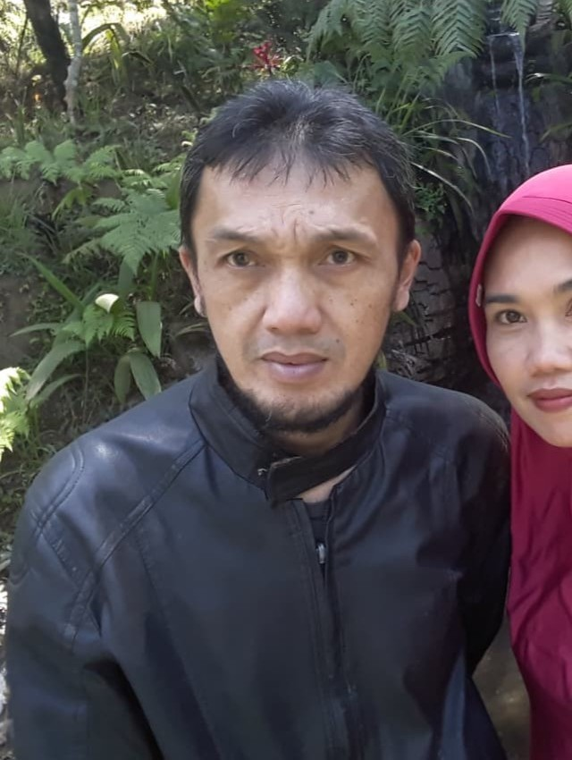
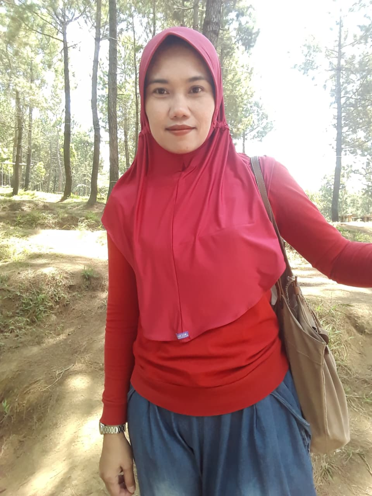
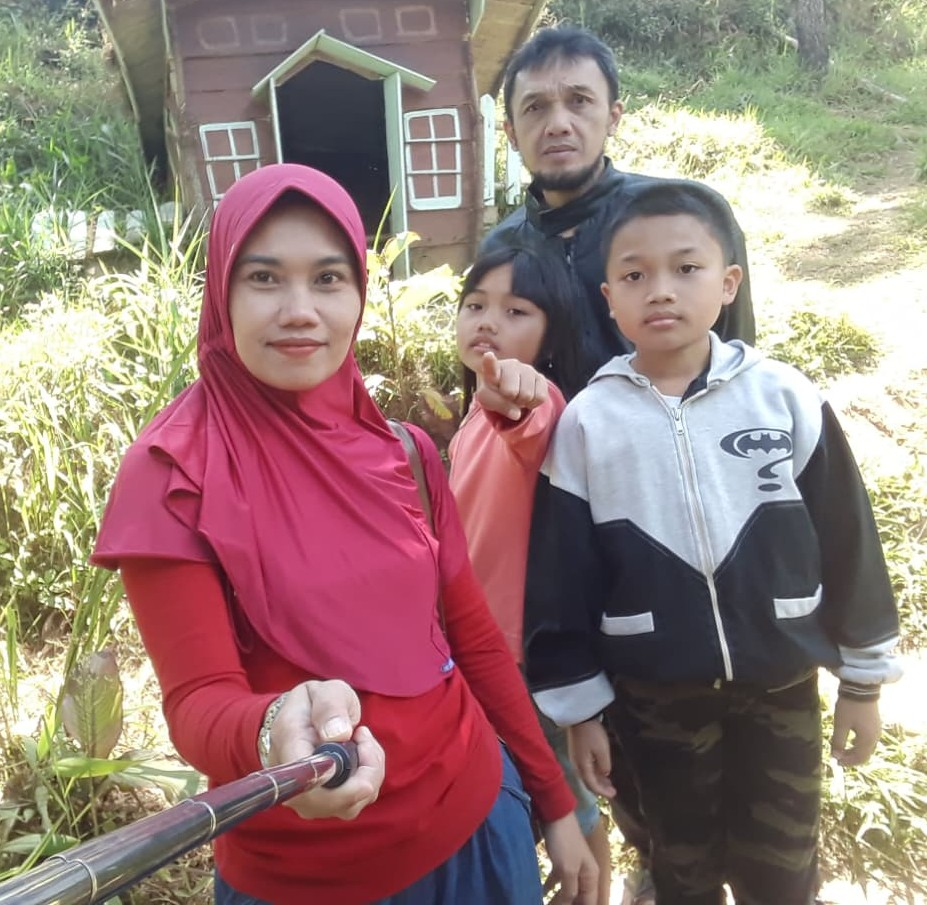

Berikut data singkat dari keluarga Iyan Juniawan
Keluarga cemara yang senang bercerita
Jadi inilah anggota dari keluarga saya yaitu:
Selamat datang di halaman profil Iyan Juniawan yang beranggotakan 4 orang yaitu ayah, ibu, kakak dan adik. Kami adalah keluarga kecil yang tinggal di Kuningan, Jawa Barat, lebih tepatnya di Cigadung. Kami selalu bercerita saat ketika senang maupun sedih dan berusaha saling mensupport satu sama lain. Bagi kami, rumah bukan hanya sekadar tempat tinggal, melainkan sebuah ruang aman di mana setiap cerita itu berharga, entah itu tentang sekolah, pekerjaan, maupun kehidupan sekalipun. Dalam menjalani keseharian, kami selalu membiasakan diri untuk terbuka satu sama lain dengan berbagi cerita dan tawa di kala senang, serta saling menguatkan dan bersandar di kala sedih melanda. Kami percaya bahwa komunikasi adalah kunci keharmonisan dalam keluarga, sehingga setiap anggota keluarga selalu berusaha memberikan dukungan terbaik demi impian dan kebahagiaan satu sama lain.
Halaman ini digunakan untuk memenuhi tugas mata kuliah Pemrograman Web di Universitas Kuningan. Semoga melalui halaman yang sederhana ini kami dapat memperkenalkan keluarga kami kepada kalian yang melihatnya.




Berikut data singkat dari keluarga Iyan Juniawan
| No | Nama | Peran | Hobi |
|---|---|---|---|
| 1. | Rakha Ghani Permana | Kakak | Bermain Game |
| 2. | Rayna Aurelya | Adik | Menggambar |
| 3. | Iyan Juniawan | Ayah | Menonton Bola |
| 4. | Yessy Chrisnawati | Ibu | Membaca buku |
2026 Keluarga Iyan Juniawan
Dibuat oleh Rakha Ghani Permana, Sistem Informasi, Universitas Kuningan